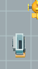
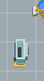

Independent actual consumer32px/cell · complete registered sprite window, actual1:1 display pixels ·12fps
NE
SW
Fixed geometric inspection windows from full actual consumer; no per-phase fitting or sprite filtering. Full contexts are retained.